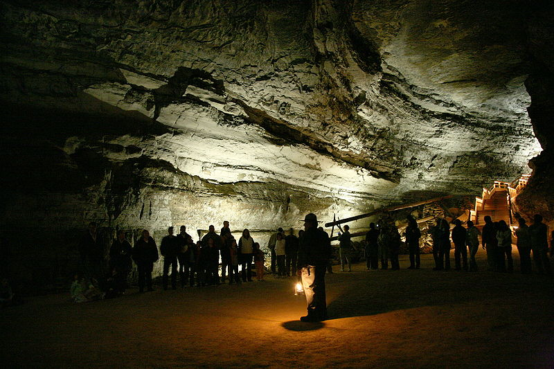

Оптимістична печера

З 1966 року по теперішній час aспелеологами досліджено понад 216 кілометрів ходів, галерей і гротів цієї печери, що робить її найдовшою печерою Європи.
Печера "Оптимістична" розташована поблизу села Королівка Борщівського району Тернопільської області.
На сьогодні ця печера перебуває у стані дослідження і недостатньо обладнана для масового туризму,тому екскурсії проводяться тільки в супроводі спелеологів.
Затоплене село Бакота
Бакота - затоплене село, розташоване в Хмельницькій області.
Останні роки ця локація привертає увагу дедалі більшої кількості туристів.
Бакота зникла з карти 1981 року, коли це село затопили водою,щоб розширити Новодністровську ГЕС. Людей виселили в сусідні населені пункти, а сама територія стала українською Атлантидою. 1987 року вода досягла того рівня, який маємо сьогодні.
Село Бакота віднедавна входить до всіх списків найкращих пам'яток України.
Лемурійське озеро
Рожеве озеро на Херсонщині вважається залишками стародавнього лемурійського моря.
Розташоване Рожеве озеро в селі Григорівка Чаплинськогорайону, в одній із бухт затоки Сиваш.
Вода озера такого дивного кольору через особливий вид водоростей, які виробляють бета-каротин під дією сонця.Тож що спекотніше літо, то більш насиченого кольору стає вода. А ще вона дуже насичена сіллю , тому тут, як і в Мертвому морі, можна буквально лежати на воді. Одне з найцікавіших місць в Україні!

Село заліщики
Невелике курортне містечко в Тернопільській області, що лежить у мальовничій долині на лівому березі Дністра.
Раніше місто було польським курортом № 1, а сьогодні - просто райцентр Тернопільської області.
Заліщики мають форму півострова, оточеного величезними горами-утьосами, завдяки яким тут панує унікальний середземноморський мікроклімат! Те, що подивитися в Україні однозначно варто!